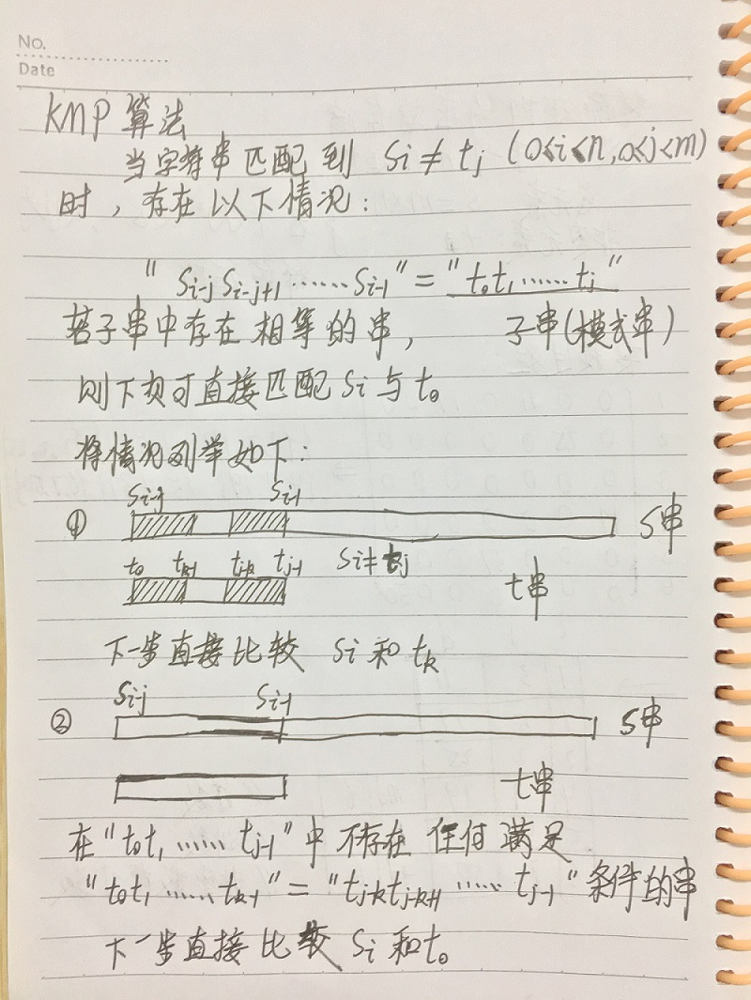

String implementation and KMP match
this page shows a implementation of String and KMP match algorithm.
KMP算法是在Brute-Force算法的基础上同时提出的模式匹配算法，KMP算法消除了Brute-Force算法的主串比较位置在多个字符比较相等后只要一个字符不相等就回退的缺点。
/////////////////////////////////////////////////////////////////////////////////////////////////////////////////////////////////////////////
串的C语言实现：
#include
#include
#define Size 10
typedef struct String {
char *s;
int length;
int size;
}String;
String init() {
String str;
str.s = (char*)malloc(Size*sizeof(char));
str.length = 0;
str.size = Size;
return str;
}
int insert(String *str, int pos, String *t) {
if (pos < 0) {
printf("插入位置错误");
return 0;
}
if (str->length + t->length > str->size) {
str->s = (char*)realloc(str->s, (str->length + t->length)*sizeof(char));//改变s指向的内存空间大小
if (!str->s) {
printf("存储分配失败");
return 0;
}
str->size = str->length + t->length;
}
for (int i = str->length - 1; i >= pos; i--) {
str->s[i + t->length] = str->s[i];//依次后移t->length长度
}
for (int i = 0; i < t->length; i++) {
str->s[pos + i] = t->s[i];
}
return 1;
}
int delete(String *str, int pos, int len) {
if (str->length == 0) {
printf("字符串已空");
return 0;
}
if (pos < 0 || len <0 || pos + len > str->length) {
printf("参数错误");
return 0;
}
for (int i = pos+len; i < str->length; i++) {
str->s[i - len] = str->s[i];
}
str->length = str->length - len;
return 1;
}
KMP算法的原理：
